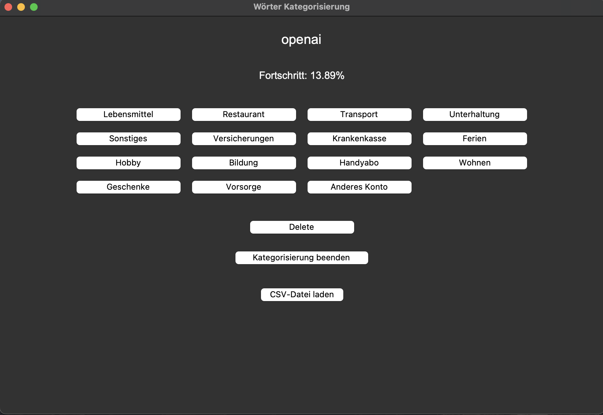

ML-gestütztes Tool zur Ausgabenkategorisierung
Projektbeschreibung
In diesem privaten Projekt entwickelte ich ein Python-Tool zur automatischen Kategorisierung persönlicher
Ausgaben.
Ziel war es, mithilfe eines Machine-Learning-Modells Transaktionen basierend auf dem Buchungstext in
vordefinierte Kategorien einzuordnen.
Technische Details
- Technologien: Python, Pandas, Scikit-learn, CSV
- Projektart: Eigenständig entwickelt (Freizeitprojekt)
- Fokus: Machine Learning, Datenklassifikation, Benutzeroberfläche
